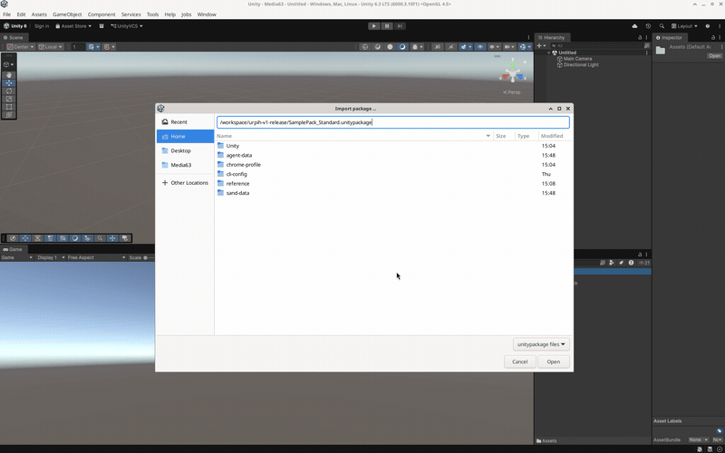
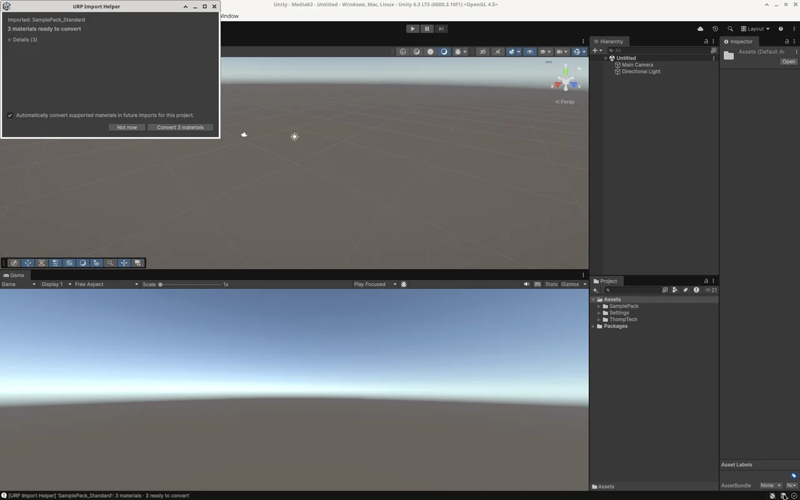
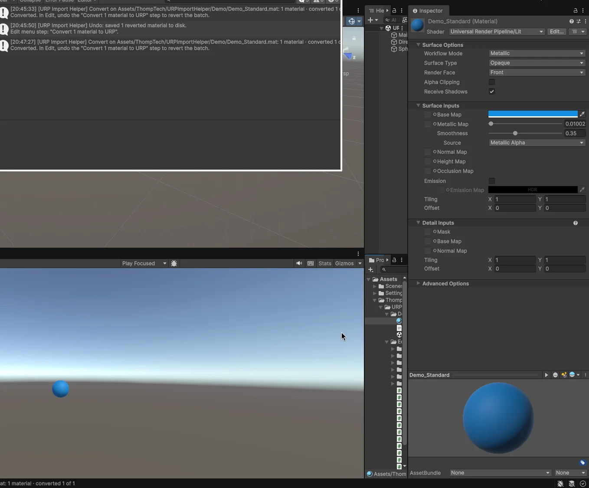
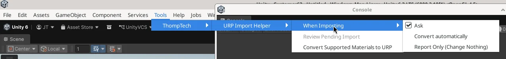
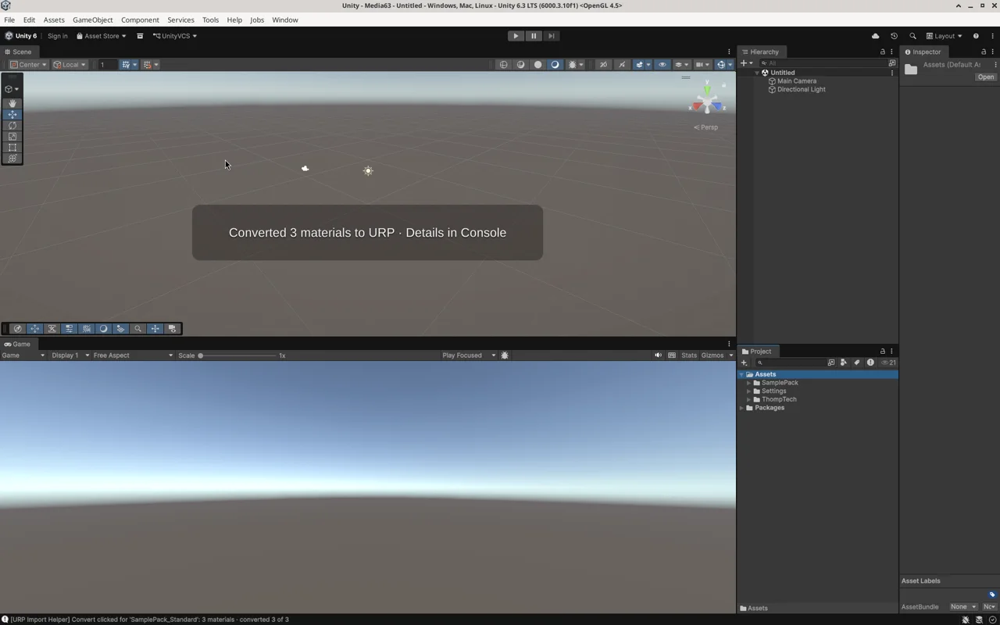
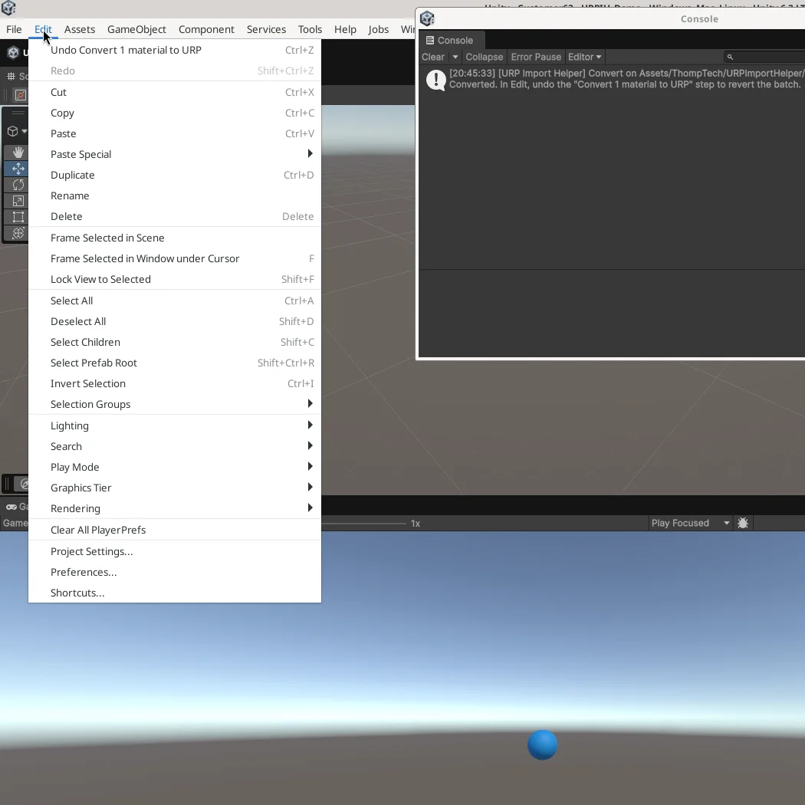

Older Asset Store packages usually ship Built-in Standard materials, so they render pink in URP and you often only notice later. URP Import Helper checks the materials the moment a .unitypackage finishes importing and offers to convert them to URP/Lit.

Import a package the way you always do. After Unity finishes importing and compiling, URP Import Helper looks at the materials that came in with it. Nothing to run, nothing to remember.
In the default Ask mode a non-modal review window shows how many materials are ready to convert. Click Convert or Not now and keep working. It never blocks Unity with a modal dialog.
Closed the window too early? Tools > ThompTech > URP Import Helper > Review Pending Import brings it back.
Detection runs on .unitypackage imports, not on ordinary asset edits or copied files. Installing the tool doesn't scan your existing project.


Standalone .mat assets using Built-in Standard (metallic workflow) become URP/Lit. Textures and settings carry over, adjusted where the two shaders handle properties differently.
Anything that fails the safety checks is left alone and explained: publisher or custom shaders, missing or mismatched texture references, materials that look meant for HDRP. If Unity's Render Pipeline Converter can handle the leftovers, you get a handoff to it.
Already have pink materials in the project? Right-click materials or folders and choose URP Import Helper > Convert Supported Materials to URP. Works in every mode.
Tools > ThompTech > URP Import Helper > When Importing. Saved per user, per project.

The "convert automatically on future imports" checkbox in the review window is checked by default. Untick it before clicking Convert if you want to stay in Ask mode.
Every run logs counts, warnings and next steps to the Console. Clean conversions show a short Scene view message; a receipt window opens only when something needs your attention.

Each batch is one named Edit > Undo step, like Convert 6 materials to URP. Reverted files are saved for you, and Redo works too. Undo history doesn't survive an Editor restart, so keep version control.

Unity's CLI and MCP already connect AI agents to the Editor. URP Import Helper adds two safety-checked commands they can call, the same Analyze and Convert operations you get in the Editor:
urpih_analyze_materials: read-onlyurpih_convert_materials: requires confirm trueCurrently requires Unity 6+ and Unity Pipeline com.unity.pipeline 0.8.0-exp.1. Not needed for normal Editor use. CLI & MCP Quick Start
com.unity.pipeline 0.8.0-exp.1. See the CLI & MCP Quick Start.Install it, try the included demo scene, and convert your first import.